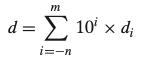
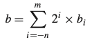
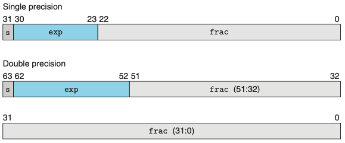
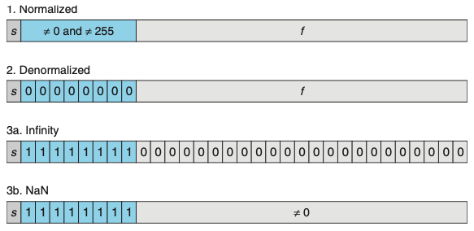
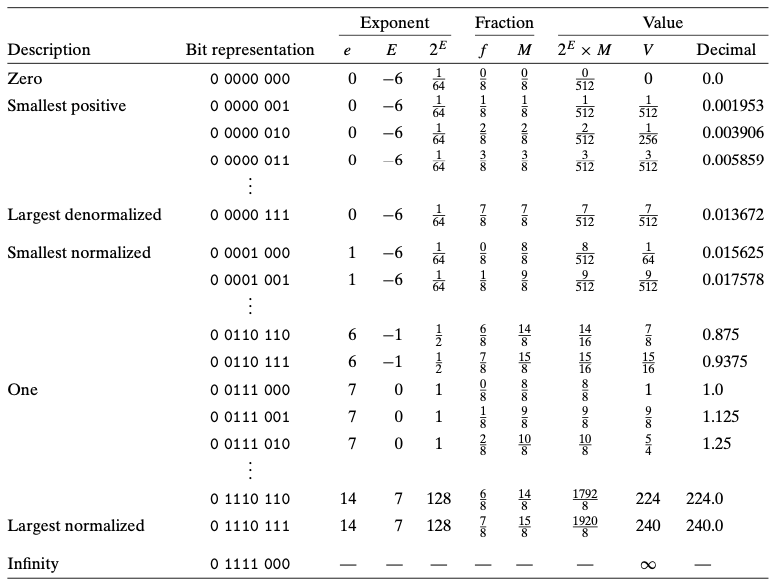

Chapter 02. 정보의 표현과 처리
- 2.1 정보의 저장
- 컴퓨터는 데이터, 인스트럭션등을 어떻게 저장하는지
- 2.2 정수의 표시
- 인코딩, 비부호형 및 2의보수
- 2.3 정수의 산술연산
- 비부호형 및 2의보수의 덧셈,뺄셈,곱셉,나눗셈
2.4 부동소수점
- 부동소수점 표현은 V = x*2^y 형태의 소수를 인코딩한다.
- 거의 모든 컴퓨터가 IEEE 부동소수점이라고 알려지게 된 방식을 지원한다.
2.4.1 비율이진수(Fractional Binary Numbers)
- 부동소수점에 대해서 이해하기 위한 첫 단계는 비율 이진수에 대해 생각해보는 것이다.
- 숫자들의 자리값은 십진 소수점 부호(‘.’)에 상대적으로 정의된다.

- 위와 같은 방식으로 binary 표기법으로 생각해보자.
- 부호 ‘.’는 이진 소수점이 되고, 좌측의 브트들은 비음수의 2의 제곱을 자리값으로 가지며, 우측은 2의 음의 제곱을 자리값으로 갖는다.
- 이진 소수점을 한 자리 우측으로 이동하면 2로 곱한 효과, 좌측으로 이동하면 2로 나눈 효과를 가진다.

- 이진수 표기는 x*2^y로 나타낼 수 있는 수만 표시할 수 있다.
- 이진 표시를 길게 늘려서 정확도를 높이도록 근사해야 한다.
2.4.2 IEEE 부동소수점 표시
- IEEE 부동소수점 표준은 수를 V = (-1)^sM2^E 형태로 나타낸다
- s는 음수와 양수를 결정한다.
- 유효숫자 M은 비율 이진수다.
- 지수 E는 2의 제곱으로 자리값을 제공한다.
- 부동소수점 수의 비트 표시는 이 값들을 인코딩하기 위해 세 개의 필드로 나누어진다.
- 한 개의 부호 비트 s는 부호 s를 직접 인코딩한다.
- k비트 지수 필드 exp = ek-1…e1e0는 지수 E를 인코딩한다.
- n비트 비율 필드 frac = fn-1 … f1f0는 유효숫자 M을 인코딩한다.

- Case 1: 정규화 값 Normalized Values
- 가장 일반적인 경우
- exp의 비트 패턴이 모두 0은 아니며, 모두 1이 아니어야 한다.
- E = e - Bias (Bias = 2^(k-1) - 1)
- 비율 필드 frac은 비율 값 f
- 유효 숫자 M = 1 + f 로 정의
- Case 2: 비정규화 값 Denormalized Values
- 지수 필드가 모두 0일 때 나타낸 수는 비정규화 형태를 갖는다.
- E = 1 - Bias
- M = f = 0
- 비정규화 숫자들의 기능은 0.0에 매우 가까운 값들을 나타냄
- 이들은 점증적 언더플로우라고 알려진 특성을 제공 (가능한 숫자 값들이 0.0 근처에서 같은 간격을 갖는다는 의미)
- Case 3: 특수 값 Special Values
- 지수 필드가 모두 1인 경우
- 비율 필드가 모두 0이면, 결과값은 무한대를 나타냄
- 비율 필드가 0이 아니면 NaN(not a numbuer)
- 지수 필드가 모두 1인 경우

2.4.3 숫자 예제

2.4.4 근사법 Rounding
- 부동소수점 산술연산은 표시방법이 제한된 범위와 정밀도를 갖기 때문에 실제 연산의 근사값을 사용할 수밖에 없다.
- “가장 유사한” 값 x를 체계적으로 계산하는 방법을 근사rounding 연산이다.
- 네가지 근사 모드를 정의함
- 짝수근사법(round-to-even): 가장 가까운 값, 중간에 위치할 경우 짝수를 향해 근사함
- 영방향근사 모드(round toward-zero): 양수 값을 아래쪽으로, 음수를 위쪽으로 근사함
- 하향근사 모드(round-down): 양수와 음수를 모두 아래쪽으로 근사함
- 상향근사 모드(round-up): 양수와 음수를 모두 위쪽으로 근사함
2.4.5 부동소수점 연산
- 부동소수점 값 x,y를 실수로 보고, 일부 연산이 실수들에 대해 정의된다면 Round(x,y)가 되는데, 이것은 실수 연산의 정확한 결과 값을 근사한 것이다.
- 부동소수점 덧셈에서 결합법칙이 성립하지 않는 것은 그룹의 특징 중에서 빠진 가장 중요한 부분이다.
- 교환법칙은 성립하지만, 결합벅칙은 성립 되지 않는다.
C에서 부동소수점
- C는 짝수 근사모드를 사용한다.
- int에서 float로, 숫자는 오버플로우할 수 없지만, 근사될 수 있다.
- int나 float에서 double로, 정확한 수치 값은 보존될 수 있다.
- double에서 float로 범위가 더 작아지기 때문에 값이 오버플로우하여 무한대가 될 수 있따.
- float나 double에서 int로, 값은 0 방향으로 근사된다
2.5 요약
- 정보를 비트로 인코딩하며, 이들은 일반적으로 연속된 바이트들로 구성된다.
- 대부분의 머신들은 정수를 인코딩하기 위해 2의 보수를 사용하고 부동소수점을 인코딩하기 위해 IEEE 표준 754를 사용한다.
- 부호형 및 비부호형 정수를 캐스팅할 때 비트 패턴을 유지하려고 하는데, T2U, U2T 함수들에 의해 나타난다.
- 제한된 길이는 숫자들이 나타낼 수 있는 범위를 넘어설 때 오버플로우를 발생시킨다.
- 비부호형과 2의 보수 산술연산은 결합법칙, 교환법칙, 분배법칙 등의 정수 산술연산의 많은 특성을 만족한다.
- 결합법칙, 교환법칙, 분배법칙 특성을 쉬프트와 2의 제곱의 곱셈 간 관계와 함께 사용된다.
- 부동소수점 산술연산은 매우 조심스럽게 사용해야한다.
- 제한된 범위와 정밀도를 갖기 때문이며, 결합법칙 같은 일반적인 수학 법칙을 따르지 않기 때문이다.
부동소수점을 마지막으로 Chapter2 정보의 표현과 처리를 마무리하였다. 데이터 엔지니어링 인턴 포지션에서 ETL 작업을 하며 소수점 데이터에 접근 했을 때 R코드와 Python의 소수 처리 방식이 달라서 해당 오류를 잡는데 많은 시간이 걸린 경험이 있었다. 그 때 당시에는 대충 방식이 다르구나~ 로 끝났지만, 이번 챕터를 공부하게 되면서 아 부동소수점의 표현 방식 때문에(책은 C를 기준으로 하고 있지만,,,) 그런 오류가 잡혔던 거구나 하고 시야가 조금 더 넓어진 것 같다. 2.2절의 캐스팅과 2.4절의 부동소수점을 공부하면서 꽤 많은 애를 먹었지만, 앞으로 코딩을 하면서 캐스팅이나 소수점을 다룰 때 더 주의 깊게 다룰 수 있을 것 같다.